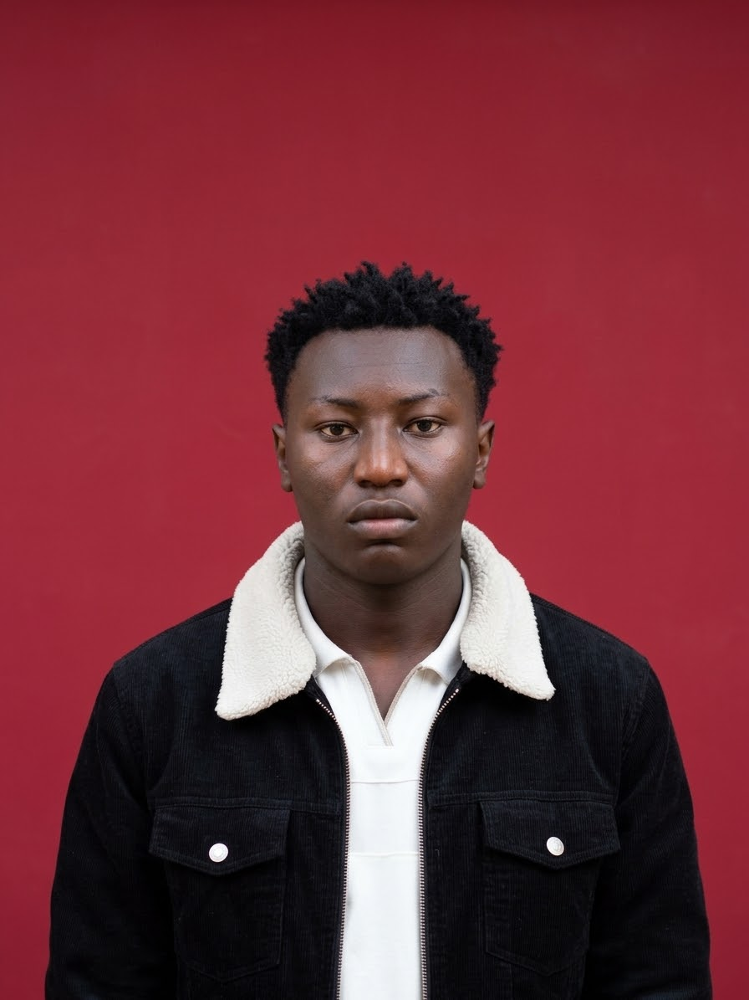

Hello, I'm Kevian
Full names: Kevian Kipchumba Bett
Course: Bachelor of Science in Information Technology, Kisii University, Year Two.
What I offer: I build clean, simple websites and I am comfortable with HTML, CSS and basic programming. I am a quick learner, I work well in a team and I take my deadlines seriously.
Background: I was born and raised in Nandi County, Kenya. I attended ST LUKE'S Preparatory school for my primary education and ST Patrick's High school - iten for my secondary education, before joining Kisii University to pursue my studies.
After my course: I hope to work as a web developer and IT professional], gain hands-on experience, and later grow into building technology solutions that solve real problems in my community.